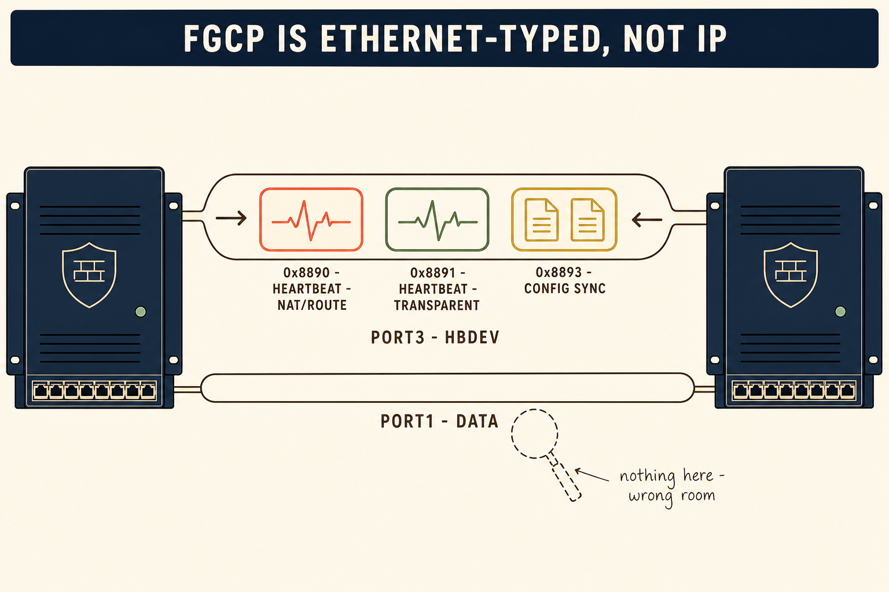
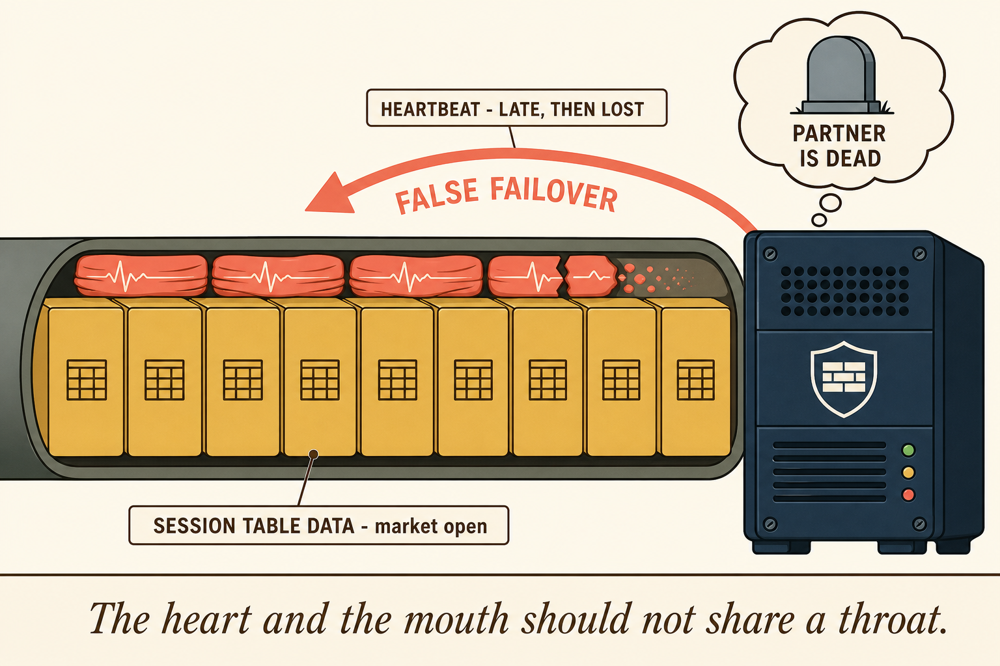
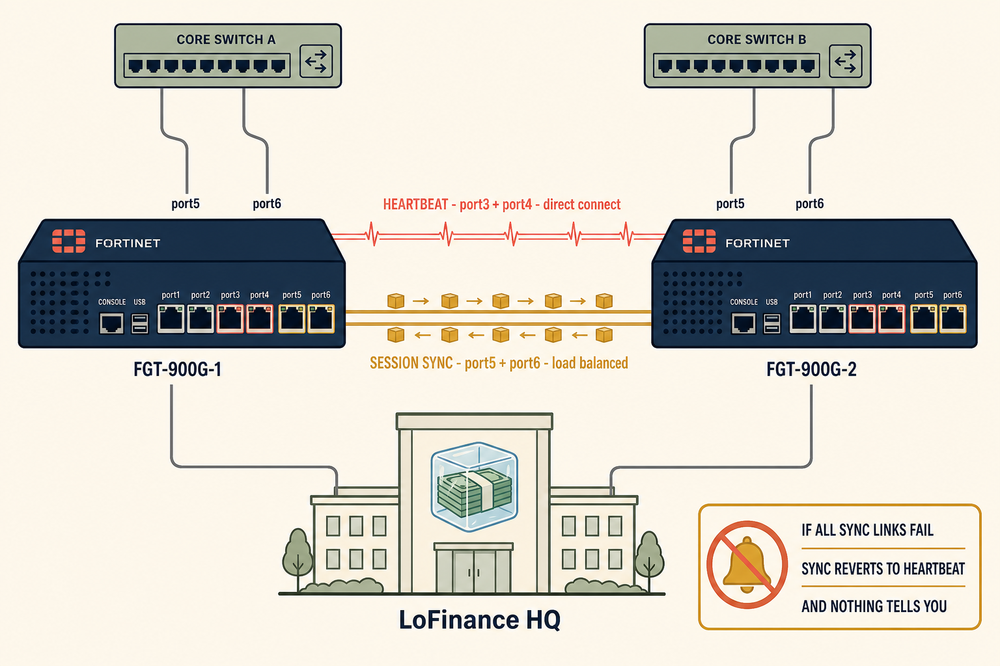
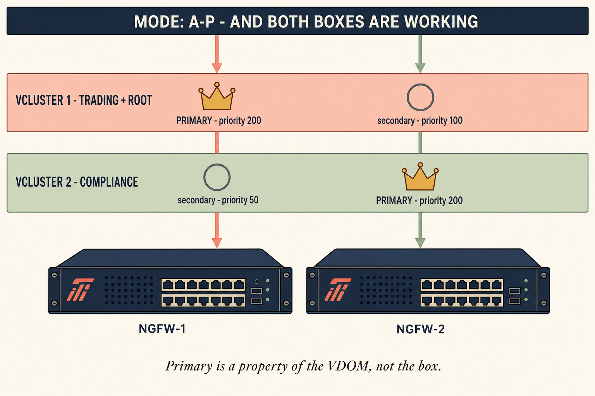
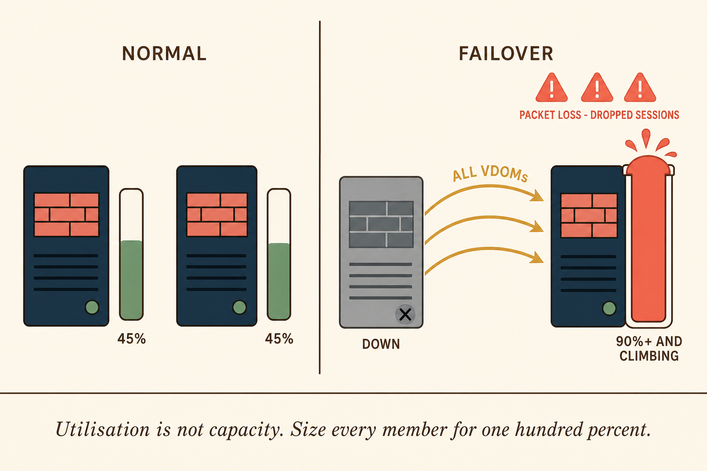

RECOMMENDED VISUAL STYLE
Packet Journey plus Enterprise Topology
Style selected · Packet Journey / Topology hybrid
This session's two lessons are both spatial. The false failover is not a logic error — it is a congestion event on a specific piece of copper, and you only understand it by seeing what else is on that wire. VDOM partitioning is not an algorithm either — it is a map of territory, showing which box is the front door for which part of the business.
So the page follows a physical journey: down the heartbeat cable at 09:29, down the same cable at 09:31 when the market opens, then out to the rebuilt topology with a separated sync path, and finally up to the territorial view where both boxes wear a crown for different ground. Five images, each carrying one irreducible idea.
🧠
MENTAL NOTE
Everything in this session is a question about which wire something is on. Draw the wires and the answers appear.
VISUAL SEQUENCE
Five images, five ideas
images/v1-three-ethertypes.png
1 · The Language on the Wire
Purpose: Fix the three ethertypes in memory by attaching each to a visibly different frame travelling a specific, named cable — and to show that a data port carries none of them.

🖼️
Image not yet generated
Drop the generated PNG at images/v1-three-ethertypes.png
Image Generation Prompt
Flat minimalistic vector illustration in a modern editorial style. Warm cream background (#faf5e9). Palette strictly coral, muted gold, sage green, dark navy, soft brown outlines. Bold clean line work, no gradients, no photorealism, no glossy 3D rendering, generous negative space. Composition: a wide horizontal scene. On the far left and far right stand two identical dark navy rack-mounted firewall chassis drawn in simple front elevation with a row of small square ports along the bottom edge; each chassis has a tiny sage green status LED. Between them run TWO cables drawn as clean parallel curved tubes. The upper tube is thick and labelled beneath in small clean sans-serif capitals 'PORT3 · HBDEV'. Travelling inside it, left to right and right to left, are three clearly distinct stylised Ethernet frames drawn as rounded rectangles: a coral frame containing a small heartbeat pulse waveform, labelled '0x8890 · HEARTBEAT · NAT/ROUTE'; a sage green frame also containing a pulse waveform, labelled '0x8891 · HEARTBEAT · TRANSPARENT'; and a muted gold frame containing two tiny identical document icons, labelled '0x8893 · CONFIG SYNC'. The lower tube is thinner, labelled 'PORT1 · DATA', and is drawn conspicuously EMPTY of any of these coloured frames — instead a small dashed-outline magnifying glass hovers over it with a tiny handwritten-style note reading 'nothing here — wrong room'. Across the very top of the image, a slim banner in dark navy with cream text reads 'FGCP IS ETHERNET-TYPED, NOT IP'. Educational diagram clarity with storybook warmth; every label short. Do not include any human characters, any company logos, any IP addresses, any dense paragraphs, and no more than the labels described.
| Aspect ratio | 16:9 · place first, immediately after the style note |
| Accessibility description | Two firewalls joined by a heartbeat cable carrying three colour-coded FGCP frames, with a parallel data cable shown empty. |
| Memory anchor reinforced | 0x8890 and 0x8891 are both heartbeat; 0x8893 is config sync; and the heartbeat only exists on the hbdev. |
images/v2-the-throat.png
2 · The Heart and the Mouth
Purpose: Make the false-failover mechanism physically obvious — the heartbeat is not missing, it is being crushed — and attach it to Señor's line so the phrase and the mechanism recall each other.

🖼️
Image not yet generated
Drop the generated PNG at images/v2-the-throat.png
Image Generation Prompt
Flat minimalistic vector illustration, warm cream background (#faf5e9), palette of coral, muted gold, sage green, dark navy, soft brown outlines. Bold clean lines, no gradients, no 3D, no photorealism. Composition: a single dramatic cutaway of one thick cable running horizontally across the full width of the frame, drawn as a tube in cross-section so the viewer can see inside it. Filling almost the entire interior are large muted gold rectangular blocks packed tightly shoulder to shoulder, each stamped with a tiny table-grid icon; a small label with a leader line reads 'SESSION TABLE DATA · market open'. Squeezed hard against the top inner wall of the tube are four tiny coral heartbeat-pulse frames: the first three are visibly compressed and deformed, and the fourth is cracked into two pieces and fading out, with a small label 'HEARTBEAT · LATE, THEN LOST'. At the right-hand end of the cable sits a dark navy firewall chassis in simple front elevation, with a large rounded thought bubble above it containing a single simple gravestone icon and three short words in clean capitals: 'PARTNER IS DEAD'. A bold coral curved arrow sweeps from the thought bubble back down and to the left, labelled 'FALSE FAILOVER'. Along the bottom of the image, set apart in a slim cream band with a thin brown rule above it, is a single line of elegant italic serif text: 'The heart and the mouth should not share a throat.' Strong visual hierarchy: the crushed coral pulses must be the eye's second stop after the gold blocks. Do not include human characters, logos, or any additional text beyond the labels described.
| Aspect ratio | 16:9 · place second, as the emotional centre of the page |
| Accessibility description | A cutaway cable packed with bulk session data crushing tiny heartbeat frames, leading a firewall to conclude its partner has died. |
| Memory anchor reinforced | A false failover is contention, not failure — and it is worse than a real one because you took the outage for nothing. |
images/v3-two-roads.png
3 · Two Roads Out of HQ
Purpose: Show the corrected LoFinance topology so the fix is remembered as a physical change to the rack, and embed the silent-fallback trap in the same picture where the fix lives.

🖼️
Image not yet generated
Drop the generated PNG at images/v3-two-roads.png
Image Generation Prompt
Flat minimalistic vector illustration of an enterprise network topology, warm cream background (#faf5e9), coral / muted gold / sage green / dark navy palette, soft brown outlines, clean bold line work, no gradients, no photorealism, no 3D, generous spacing. Composition: centred, slightly isometric-flat hybrid. Two identical dark navy firewall chassis sit side by side in the middle of the frame, each drawn in simple front elevation with labelled port rows, captioned beneath in small clean capitals 'FGT-900G-1' and 'FGT-900G-2'. Between them run TWO clearly separated bundles of cable, drawn at different heights with visible clear space between them. The upper bundle is thin, coral, and carries evenly spaced small pulse glyphs with generous gaps; it is labelled 'HEARTBEAT · port3 + port4 · direct connect'. The lower bundle is thicker, muted gold, split visibly into two parallel strands, and carries gold data blocks flowing freely; it is labelled 'SESSION SYNC · port5 + port6 · load balanced'. Above the pair, two simple network-switch icons connect downward to the firewalls' data ports with plain grey lines. Below the pair, a simple building outline labelled 'LoFinance HQ' with a small logo mark of a stack of banknotes frozen inside a translucent ice cube. In the lower right corner sits a small amber-bordered inset card with a bell icon crossed out, containing three short lines of clean text: 'IF ALL SYNC LINKS FAIL', 'SYNC REVERTS TO HEARTBEAT', 'AND NOTHING TELLS YOU'. Visual hierarchy: the physical separation of the two cable bundles must be the most obvious feature of the image. Do not include human characters, no dense labels, no IP addressing.
| Aspect ratio | 16:9 or 3:2 · place third, as the as-built record |
| Accessibility description | The LoFinance HQ cluster rebuilt with heartbeat cables and dedicated session-sync cables physically separated, plus a warning card about silent fallback. |
| Memory anchor reinforced | Dedicated sync interfaces load balance; if they all fail, sync silently returns to the heartbeat link. |
images/v4-two-crowns.png
4 · Two Crowns, Two Territories
Purpose: Resolve the apparent paradox of active-passive with both boxes working, by making 'primary' visibly a property of the territory rather than the box.

🖼️
Image not yet generated
Drop the generated PNG at images/v4-two-crowns.png
Image Generation Prompt
Flat minimalistic vector illustration, warm cream background (#faf5e9), coral / muted gold / sage green / dark navy palette, soft brown outlines, bold clean lines, no gradients, no 3D, no photorealism. Composition: centred and symmetrical. Two identical dark navy firewall chassis stand side by side in the lower half of the frame, labelled beneath in small clean capitals 'NGFW-1' and 'NGFW-2'. Spanning the upper half are TWO horizontal translucent territory bands stacked one above the other, each running the full width of the image. The upper band is tinted soft coral and labelled at its left edge 'VCLUSTER 1 · TRADING + ROOT'. The lower band is tinted sage green and labelled 'VCLUSTER 2 · COMPLIANCE'. Within the coral band, a small simple gold crown icon sits directly above NGFW-1 with a short tag reading 'PRIMARY · priority 200', while a plain hollow grey circle sits above NGFW-2 tagged 'secondary · priority 100'. Within the sage band the arrangement is exactly mirrored: the gold crown sits above NGFW-2 tagged 'PRIMARY · priority 200', and the hollow grey circle above NGFW-1 tagged 'secondary · priority 50'. Coral arrows descend from the top of the frame into NGFW-1 and sage green arrows descend into NGFW-2, visually proving both chassis are carrying live traffic. A slim dark navy banner across the very top reads in cream capitals 'MODE: A-P — AND BOTH BOXES ARE WORKING'. Beneath the chassis, one short italic serif line: 'Primary is a property of the VDOM, not the box.' Do not include human characters, logos other than as described, gradients, or any additional text.
| Aspect ratio | 3:2 · place fourth, as the design reveal |
| Accessibility description | Two firewalls under two territory bands, each holding the primary crown in one band and a secondary marker in the other. |
| Memory anchor reinforced | Virtual clustering stays active-passive; VDOM partitioning makes 'primary' a per-VDOM role selected by priority. |
images/v5-the-bill.png
5 · The Bill at 03:00
Purpose: Prevent the most expensive misunderstanding of the session — that two working boxes means two boxes of capacity — by showing the survivor inheriting everything.

🖼️
Image not yet generated
Drop the generated PNG at images/v5-the-bill.png
Image Generation Prompt
Flat minimalistic vector illustration, warm cream background (#faf5e9), coral / muted gold / sage green / dark navy palette, soft brown outlines, bold clean lines, no gradients, no 3D, no photorealism. Composition: two panels side by side, separated by a thin vertical brown rule. LEFT PANEL headed in small clean capitals 'NORMAL': two dark navy firewall chassis, each with a simple vertical load gauge drawn beside it as a rounded bar filled to just under halfway in sage green, each gauge labelled '45%'. Both chassis look calm, each with a small sage status dot. RIGHT PANEL headed 'FAILOVER': the left-hand chassis is drawn in flat grey with a small dark X over its status dot and a short label 'DOWN'. The right-hand chassis now has a single load gauge filled almost to the very top in coral, with the fill visibly bulging past the top rim, labelled '90%+ AND CLIMBING'. Above it, three small coral warning triangles and a short label 'PACKET LOSS · DROPPED SESSIONS'. Curved gold arrows sweep from the dead chassis across to the survivor, labelled 'ALL VDOMs'. Across the bottom of both panels, in a slim cream band with a thin brown rule above, one line of elegant italic serif text reads: 'Utilisation is not capacity. Size every member for one hundred percent.' Visual hierarchy: the overflowing coral gauge on the right must dominate the image. Do not include human characters, logos, gradients, or additional text.
| Aspect ratio | 16:9 · place last, as the closing warning |
| Accessibility description | A before-and-after comparison showing two firewalls at 45% load each, then one dead and the survivor overloaded past 90% carrying all VDOMs. |
| Memory anchor reinforced | At failover one device processes all traffic for all VDOMs — so each member must be sized for the full load. |
🧠
MENTAL NOTE
Five images, five sentences: three ethertypes on the hbdev · the heart and the mouth should not share a throat · give sync its own road · primary belongs to the VDOM · utilisation is not capacity.